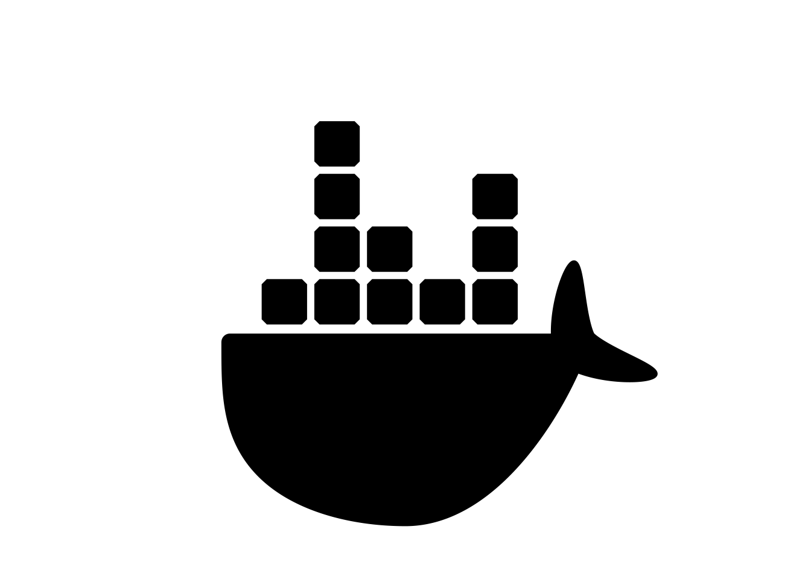
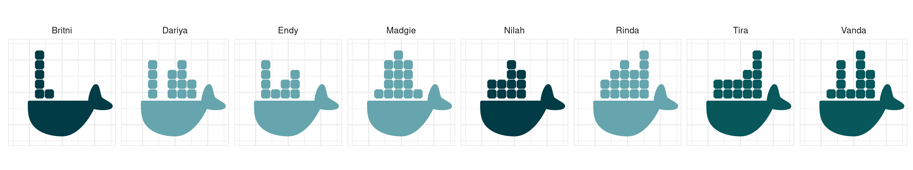

![]()
docker run hello-worldDocker docker docker baby. This is a post about docker, and on the off chance that you’ve been living under a rock for the last several years, docker1 allows you to run your code within a “container” that isolates it from other processes running on your machine. Containers are a bit like virtual machines, but smaller, more portable, and don’t require you to have a complete copy of a second operating system running on your machine. They’re… actually, you know what? Why don’t I quote the relevant paragraphs from the docker website:
CONTAINERS: Containers are an abstraction at the app layer that packages code and dependencies together. Multiple containers can run on the same machine and share the OS kernel2 3 4 with other containers, each running as isolated processes in user space. Containers take up less space than VMs (container images are typically tens of MBs in size), can handle more applications and require fewer VMs and Operating systems.
VIRTUAL MACHINES: Virtual machines (VMs) are an abstraction of physical hardware turning one server into many servers. The hypervisor allows multiple VMs to run on a single machine. Each VM includes a full copy of an operating system, the application, necessary binaries and libraries – taking up tens of GBs. VMs can also be slow to boot.
They even have pretty pictures on the website. I thought about reproducing their figures for this blog post but why bother? If you want to look at their pictures you can go look at the website and in any case I think we can all agree that making these cute whale graphics with ggplot2 was a much better use of my time, yes?
Anyway. I’ve been meaning to teach myself docker for a few years now. It’s one of those “things” that has this weird aura of being difficult when it… doesn’t seem to be all that difficult? For a long time I’ve had this feeling of dread or insecurity about it, thinking that it must be “too technical” for me.5 I have no doubt that the internals to docker are complicated, and there are subtleties to using docker well that will take a while to grasp, but when I managed to set aside my fears and read the documentation it turned out that the basics were surprisingly easy.
Installing docker
The installation guides on the docker website are good, and have information for various operating systems. I’m doing this on my ubuntu laptop6 so I followed the ubuntu install guide. I also went a little further and followed the post-install instructions for linux so that I could run docker commands without requiring superuser privileges: that’s the reason you won’t see any sudo commands in this post. Obviously, that’s something that will be a bit different on different operating systems and I’m not trying to write a tutorial here, but if you are using this post as a resource you can check that everything is working on your own installation by running this command:
Unable to find image 'hello-world:latest' locally
latest: Pulling from library/hello-world
2db29710123e: Pull complete
Digest: sha256:c77be1d3a47d0caf71a82dd893ee61ce01f32fc758031a6ec4cf1389248bb833
Status: Downloaded newer image for hello-world:latest
Hello from Docker!
This message shows that your installation appears to be working correctly.
To generate this message, Docker took the following steps:
1. The Docker client contacted the Docker daemon.
2. The Docker daemon pulled the "hello-world" image from the Docker Hub.
(amd64)
3. The Docker daemon created a new container from that image which runs the
executable that produces the output you are currently reading.
4. The Docker daemon streamed that output to the Docker client, which sent it
to your terminal.
To try something more ambitious, you can run an Ubuntu container with:
$ docker run -it ubuntu bash
Share images, automate workflows, and more with a free Docker ID:
https://hub.docker.com/
For more examples and ideas, visit:
https://docs.docker.com/get-started/Okay that looks good. Docker7 seems to be running on my machine. As an aside, as long as you are online you don’t need to have a copy hello-world itself for this to work: docker will download it for you when you run the command.
Terminology
Before diving in and using docker, it helps to disambiguate three terms:
- Container. A container is an executable. It runs on your machine isolated from other processes, has a namespace on the kernel, etc. Setting the particulars aside, it is a computing environment.
- Image. An image is a read-only template that contains the instruction to build a container. It’s a “snapshot” of a computing environment, constructed from one or more “layers” of build steps. Images are binaries that are stored locally and hosted on various registries. More on that later!
- Dockerfile. Finally, there’s the dockerfile.8 That’s a plain text file that you as the user write. It contains the instructions for how to construct an image. They supply, in a (very!) abstract sense, the source code for an image.
So it works like this. You use a dockerfile to build an image, the image contains the instructions to run a container, and the corresponding commands are quite sensibly called docker build and docker run. Or if you like diagrams with labelled arrows…
\[ \mbox{dockerfile} \xrightarrow{\mbox{build}} \mbox{image} \xrightarrow{\mbox{run}} \mbox{container} \]
At any point you can get a summary of the images on your system by running docker image list. If you’re doing this with a fresh installation and you run the command after running the “hello world” example above,9 you’d get output that looks like this:
docker image listREPOSITORY TAG IMAGE ID CREATED SIZE
hello-world latest feb5d9fea6a5 15 months ago 13.3kBYou can do the same thing for containers with docker container ls,10 which by default will show you currently-running containers. To see all containers, running or not, add the --all parameter:
docker container ls --allCONTAINER ID IMAGE COMMAND CREATED STATUS PORTS NAMES
efcf7186776f hello-world "/hello" 6 minutes ago Exited (0) 6 minutes ago bold_davinciNotice the difference in the “CREATED” time! The image for hello-world is something that someone else created 15 months ago and kindly placed online so I could pull it onto my machine without building it myself. The container is the executable that I created from that image a mere 6 minutes ago when I called docker run. They’re both currently on my laptop, but they are quite different things.
Ah, but I am rambling again, aren’t I? Sorry. Shall we have a go at this then?

geom_polygon(). Later in the process I tweaked the tail a bit.Motivating problem
In my last post I mentioned that, btw I use arch now.11 Well. Sort of. A more accurate statement would be to say that I installed arch linux on a secondary laptop as something to play with and I’m still using ubuntu for my day to day coding. At the moment I’m still getting used to the quirks of arch and encountering odd behaviour when – for example – one of my scripts that ran perfectly well on my ubuntu machine caused RStudio to crash when I ran it on the arch box. The “it works on my machine” problem strikes again… sigh.
In an effort to isolate the problem I started reran the unit tests for the package that I thought might be responsible for the crash and they all passed on both machines, but since that package is my queue package and the unit test aren’t as comprehensive as I’d like I would not be at all surprised if there’s an exotic bug that makes it fail only on arch.
All this made me think a little about how I typically use CI.12 Like many R developers I’ll use github actions to run my unit tests on mac os, ubuntu, and windows. I’ll run the tests with multiple versions of R including R-devel. If I’m thinking about a CRAN submission I’ll expand the scope and run my tests using other services also.
I’ve never tested on arch though.
I’ve never tested on arch because I’ve never had an arch machine to test on before. Or… [docker enters from stage left]… I’ve never had an arch image that I can use to containerise my unit tests before…
Ooh… a side project! Why don’t I try creating some docker images with R running on arch linux? In other words, why don’t I do a really lazy, half-arsed version of the thing that the rocker project has already done to an extremely high standard with ubuntu and debian… except with arch?13
expand_grid() function from tidyr creates the necessary data structure, and geom_tile() plots it. One thing I really like about this iteration is that the spacing of the boxes creates a Hermann grid illusion. It’s not as cool as the scintillating grid version, but I used to teach it in introductory cognitive science classes and I have a soft spot for it.Minimal example
Sometimes the easiest way to tell a story is to begin at the ending, and – spoiler! – I did in fact succeed in my attempt,14 and I am now the proud15 maintainer of two hastily-constructed images hosted on the github container repository. Now that I have these things, it should be really easy for us to put together a simple project that will run R code using these images and – even though I’m going to be using my ubuntu laptop – have it be executed by a container that is running arch.
Oh. The. Thrill.
Be. Still. My. Beating. Heart.
Okay, so here it is. Accompanying this post is a project called system-check that consists of a three-line dockerfile and a two-line R script. Let’s ignore the dockerfile for a moment and focus on the R code. Here’s the script:
./system-check/script.R
cat(c("Running on:", osVersion), sep = "\n ")
cat(c("With locale:", strsplit(Sys.getlocale(), ";")[[1]]), sep = "\n ")If we ignore the parts the code dedicated to making the output pretty, we can see that all it’s doing is printing the osVersion and calling Sys.getlocale(). Here’s what happens when I run the script on my ubuntu laptop, without using docker in any way:
Rscript ./system-check/script.RRunning on:
Ubuntu 22.04.1 LTS
With locale:
LC_CTYPE=en_AU.UTF-8
LC_NUMERIC=C
LC_TIME=en_AU.UTF-8
LC_COLLATE=en_AU.UTF-8
LC_MONETARY=en_AU.UTF-8
LC_MESSAGES=en_AU.UTF-8
LC_PAPER=en_AU.UTF-8
LC_NAME=C
LC_ADDRESS=C
LC_TELEPHONE=C
LC_MEASUREMENT=en_AU.UTF-8
LC_IDENTIFICATION=CThe first part of the output tells me my operating system (ubuntu), and the second part specifies the locale. I’m in Australia so for most things my locale is en_AU.UTF-8. That makes sense, but of course this output is specific to my machine: an arch user running R in the United States should expect to see something very different.
That’s where docker comes in.
The docker images that I built and am hosting on github simulate exactly that. The computing environments specified by the arch-r-base and arch-r-test images use arch linux as the operating system and have the system locale set to en_US.UTF-8. So if I were to execute this script from within a container running the arch-r-base16 image, I should expect to see different results even though my laptop is running ubuntu and my system locale is en_AU.UTF-8.
Here’s a dockerfile specifying an image that does exactly that:
./system-check/Dockerfile
FROM ghcr.io/djnavarro/arch-r-base:release
COPY script.R /home/script.R
CMD Rscript /home/script.RIt’s a sequence of three docker instructions.
Like all dockerfiles, it begins with a
FROM17 18 instruction that specifies the name of a preexisting docker image to use as a starting point. I’ve been very explicit here and referenced the image using a fully qualified name that consists of a container repository (ghcr.io), a username (djnavarro), the image namearch-r-base, and an optional tag (release). You don’t always need to be that precise, especially if you’re using an image that you know exists locally.The second step is a
COPYinstruction that copies the R script to a specific file path within the image. This takes place at build time. This step is necessary because when the container starts up it will be isolated from other processes on the system. It doesn’t have access to the host file system. If you want the container to have access to a file you need to copy it at build time.19The third step is a
CMDinstruction. Every dockerfile must have aCMDinstruction (and much like highlanders there can be only one) specifying a default for what the container should do when it is launched.20
Later on, when you’re starting to feel comfortable with the basic idea of writing dockerfiles, its worth reading the official guide on dockerfile best practices. Lots of little things started to make sense to me when I did that. For now, let’s just acknowledged that yes Virginia we have a dockerfile.


Building the image
Our next step is to build it to an image. The way we do that from the terminal is with the docker build command. For the purposes of this post – which I am writing in quarto and thus has a code execution engine blah blah blah – I am going to assume21 that the working directory is set to the folder containing the post, and that it contains a subfolder called system-check in which the dockerfile and the R script are stored. In other words, system-check is the directory holding the docker project.
The simplest way to build an image from this project is like this:
docker build system-checkThis command tells docker to look for a dockerfile in the system-check folder, and make an image using whatever it finds there. That’s a perfectly fine way to do it, but my personal preference is to give the resulting image a name, using the --tag flag. So the command, which I’ve broken over a few lines to highlight its structure, now looks like this:
docker build \
--tag my-system-check \
system-checkThe reason I’ve done this is that later on when I call the docker run command I can refer to the image by name, which does make life simpler. Under normal circumstances I’d probably have called the image system-check rather than my-system-check (why create new names when I don’t need to?) but for the purposes of this post I think it’s helpful to be clear that when I refer to the image name I’m referring to the thing I created using --tag, not the name of the folder that holds the dockerfile!
Okay, enough talk. Let’s run it this time:
docker build \
--tag my-system-check \
system-checkSending build context to Docker daemon 3.072kB
Step 1/3 : FROM ghcr.io/djnavarro/arch-r-base:release
release: Pulling from djnavarro/arch-r-base
597018910566: Pull complete
8150bcc6bc64: Pull complete
e49e8a34689c: Pull complete
c14eff78251d: Pull complete
42b358854199: Pull complete
babcc0d99cfd: Pull complete
Digest: sha256:f9ff0f7b431ed1b975823c871949ccbc15c3e3d7dce23775f793f9f64bb2779e
Status: Downloaded newer image for ghcr.io/djnavarro/arch-r-base:release
---> 0a9929e54a6b
Step 2/3 : COPY script.R /home/script.R
---> b9913096b118
Step 3/3 : CMD Rscript /home/script.R
---> Running in 1314ee0ff2fb
Removing intermediate container 1314ee0ff2fb
---> 489003ffb5d0
Successfully built 489003ffb5d0
Successfully tagged my-system-check:latestThe output here shows you that the build process unfolds as a sequence of three steps: one for each of our docker instructions. It also gives you the impression (correctly!) that the first step is considerably more complex than the other two. That makes sense: the arch-r-base image is itself constructed from a sequence of steps, and those steps have produced an image that is built from several “layers”. Each of those hexadecimal hashes refers to one of the layers.22
When you run this on your own system you’ll see little progress bars as the different layers of the image are downloaded. For example, that line that says 597018910566: Pull complete? That’s referring to the very first layer in the arch-r-base image (which is arch linux itself) and that layer is about 280MB or something like that, so you get a little progress bar to let you know how its going. That’s super helpful if you ever find yourself using the arch-r-test image, because one of the layers in that image includes a texlive installation (ugh) so that layer is (I’m so sorry) about 2GB in size.
Downloading large images is a huge pain, and generally I would try to avoid creating an image with a layer that large. Thankfully, docker is smart enough to check the local cache before trying to download anything.23 We can see this in action if we repeat the exact same command:
docker build \
--tag my-system-check \
system-checkSending build context to Docker daemon 3.072kB
Step 1/3 : FROM ghcr.io/djnavarro/arch-r-base:release
---> 0a9929e54a6b
Step 2/3 : COPY script.R /home/script.R
---> Using cache
---> b9913096b118
Step 3/3 : CMD Rscript /home/script.R
---> Using cache
---> 489003ffb5d0
Successfully built 489003ffb5d0
Successfully tagged my-system-check:latestThis finishes instantaneously because docker24 25 notices that I already have a copy of this image so it uses the cache for everything.
We can confirm that this has worked by running docker image list:
docker image listREPOSITORY TAG IMAGE ID CREATED SIZE
my-system-check latest 489003ffb5d0 26 minutes ago 955MB
ghcr.io/djnavarro/arch-r-base release 0a9929e54a6b 13 hours ago 955MB
hello-world latest feb5d9fea6a5 15 months ago 13.3kBNow, you might be wondering about those image sizes. Did I really just create two 955MB images? That seems a bit much. It’s certainly true that the image is 955MB in size: after all, the image does have to describe an entire operating system running R, so it’s not surprising that it isn’t tiny. But it looks as if I just wasted an entire GB of space by making two of them. Thankfully, docker is not that silly. The my-system-check image is almost identical to arch-r-base. In fact, it’s just one very small layer added on top of the layers that comprise the arch-r-base image. If you dig into the documentation on storage you discover that docker quite sensibly allows images to share layers, so even though arch-r-base and my-system-check are individually 955MB in size, they are also collectively 955MB in size thanks to layer sharing.
The sheer excitement of working with computers is just too much for me to bear sometimes.
Run in a container
Okay, we are ready to go baby! The image is set up, and all we have to do is run it in a container using docker run. The docker run command is quite powerful, and has a lot of arguments you can use to control how the image executes.26 I’m not going to use any of that flexibility here. This is just a vanilla command asking docker to run the my-system-check image:
docker run my-system-checkRunning on:
Arch Linux
With locale:
LC_CTYPE=en_US.UTF-8
LC_NUMERIC=C
LC_TIME=en_US.UTF-8
LC_COLLATE=en_US.UTF-8
LC_MONETARY=en_US.UTF-8
LC_MESSAGES=en_US.UTF-8
LC_PAPER=en_US.UTF-8
LC_NAME=C
LC_ADDRESS=C
LC_TELEPHONE=C
LC_MEASUREMENT=en_US.UTF-8
LC_IDENTIFICATION=CIt’s an awfully elaborate way to say “btw I use arch”, but yes… the image does what we hoped it would. It’s executed the R script on arch linux with a en_US.UTF-8 locale. I have successfully faked it27 as an arch user.
Fancier example
For the next example I’ll add a little bit of extra complexity. The real reason I wanted the arch-r images in the first place was to make it easier to run unit tests for an R package on a system running arch linux. If I were going to do this properly I’d set it up in a way that could be incorporated into a CI workflow with github actions, but I’m not going to be that fancy for this blog post. Instead, I’ll set it up so that I can generate containers running arch linux that can clone a package repository from github into the container, and then run the unit tests. I’ll even give it a bit of flexibility so that the user can decide at build time28 which github repository the container points to.
As before the project – which I’ve called test-on-arch – consists of two files. There’s an R script that executes at run time, and the dockerfile executed at build time. Here they are:
./test-on-arch/Dockerfile
FROM ghcr.io/djnavarro/arch-r-test:release
# copy the testing script
COPY clone-and-check.R /home/clone-and-check.R
# pass args through environment variables
ARG user
ARG repo
ARG cran=https://cloud.r-project.org
ENV user=$user
ENV repo=$repo
ENV cran=$cran
# run the testing script
CMD Rscript /home/clone-and-check.R./test-on-arch/clone-and-check.R
# get the system environment variables
user <- Sys.getenv("user")
repo <- Sys.getenv("repo")
cran <- Sys.getenv("cran")
# define github url and a path for the local package install
url <- paste("https://github.com", user, repo, sep = "/")
dir <- paste("/home/project", repo, sep="/")
# clone repo, install dependencies, and run checks
gert::git_clone(url, dir, verbose = TRUE)
remotes::install_deps(dir, dependencies = TRUE, repos = cran)
rcmdcheck::rcmdcheck(dir)Like last time, the place to start is with the R script. It expects to find user, repo, and cran values as environment variables. Once it finds those, it clones the user/repo repository from github, installs any dependencies of the package from cran, and then uses rcmdcheck to check the downloaded package.
Now let’s look at how the dockerfile sets up the computing environment to enable this script to be run on arch linux:
Just like we saw in the last example, the dockerfile begins with a
FROMinstruction. This time around though I’m using thearch-r-testimage rather than thearch-r-baseimage. Much like the base image, the test image runs arch linux and installs R in the environment. However, it also installs several other system dependencies and R packages that come in handy when runningR CMD check, which makes it a bit more useful in this context.The next step in the dockerfile is the
COPYinstruction that ensures that the image has a copy of the R script. There’s nothing new here so we can move on.The next two steps use the
ARGinstruction. This is a new one for us: it’s a mechanism for allowing the user to specify arguments that will be passed to docker when building the image. That’s handy because it means I can customise the image that gets built. The obvious use here is that I can specify theuserand therepofor the package that I want to check! (Later on we’ll see how this is done using the--build-argargument todocker build)Next up is another
ARGstep, used to specify the url for thecranrepository that the container should use to download any R packages. Notice, however, that this time I’ve specified a default value, so you don’t actually have to specifycranwhen you calldocker build: if you don’t it will just use the default urlThe
ARGsteps pass the user input to docker, but they don’t set any environment variables (remember, our R script is expecting to find environment variables). That’s the job of theENVinstructions that appear in the next three steps.29Finally, we have the
CMDinstruction, which specifies a default action for the container: run the script.
theme_minimal() with a border added as a way of subtly communicating the fact that ggplot2 is doing the work. The grid lines are almost invisible in a single whale plot like this but become more prominent in the facetted plots where there are more of them.Building the image
Setting aside the fact that our test-on-arch project has a lot of flaws and limitations, it will serve the purposes we need it to. Let’s say I want to create an image that will check the queue package hosted at github.com/djnavarro/queue. To do that I’ll need to set user=djnavarro and repo=queue when I build the image, which I can do with the --build-arg argument:
docker build \
--tag test-queue \
--build-arg user=djnavarro \
--build-arg repo=queue \
test-on-archNotice that I’ve chosen to call this image test-queue. A nice thing about being able to name the images independently from the dockerfile is that it’s easy to create multiple images using the same dockerfile (just with different arguments) and give them meaningful names. And sure, this particular example is very silly because literally everything I’m doing here at the build stage could be done just as efficiently at the run stage. But whatever.
Let’s see what happens when I try to execute this build command. The arch-r-test image is considerably larger than arch-r-base. This one isn’t a frugal image! It takes a while, so I’m going to go have a smoke while I wait30 but the nice thing is that if you’ve done it once you don’t have to do it again. Anyway…
docker build \
--tag test-queue \
--build-arg user=djnavarro \
--build-arg repo=queue \
test-on-archSending build context to Docker daemon 3.072kB
Step 1/9 : FROM ghcr.io/djnavarro/arch-r-test:release
release: Pulling from djnavarro/arch-r-test
597018910566: Already exists
8150bcc6bc64: Already exists
198fc6066fb9: Pull complete
b1600153860f: Pull complete
ed6330815f89: Pull complete
fb2d11f79510: Pull complete
ff05f09f5a58: Pull complete
9abaa14ad138: Pull complete
Digest: sha256:f4605c32e18168589bd32248f5af97f8f1b57bd4de5fa6e1b54e53db13ab9514
Status: Downloaded newer image for ghcr.io/djnavarro/arch-r-test:release
---> 4f873f316861
Step 2/9 : COPY clone-and-check.R /home/clone-and-check.R
---> d7c276834cf8
Step 3/9 : ARG user
---> Running in efeeb43f874d
Removing intermediate container efeeb43f874d
---> d5d055328ea4
Step 4/9 : ARG repo
---> Running in 75f6d1ff1502
Removing intermediate container 75f6d1ff1502
---> 7edce4d95863
Step 5/9 : ARG cran=https://cloud.r-project.org
---> Running in 3f620871b0d7
Removing intermediate container 3f620871b0d7
---> 51a7ec6700ba
Step 6/9 : ENV user=$user
---> Running in c7a7811e374e
Removing intermediate container c7a7811e374e
---> b8e01e708a08
Step 7/9 : ENV repo=$repo
---> Running in 2f01c723898c
Removing intermediate container 2f01c723898c
---> 0939221c1a35
Step 8/9 : ENV cran=$cran
---> Running in 37399a0bbe70
Removing intermediate container 37399a0bbe70
---> ccba9748fdd2
Step 9/9 : CMD Rscript /home/clone-and-check.R
---> Running in 5d3eb7184e21
Removing intermediate container 5d3eb7184e21
---> 76926d5616d7
Successfully built 76926d5616d7
Successfully tagged test-queue:latestNotice that during the first step when downloading arch-r-test, I didn’t have to download the whole thing. Two of the layers in arch-r-test are shared with the arch-r-base image, and docker is smart enough to notice that I already have those layers in my cache. That’s what the Already exists part of the output indicates. Admittedly it doesn’t save us much in this case because its the texlive installation that causes pain, but it’s a nice feature nevertheless.
As a little sanity check – because, dear reader, I have been sitting here waiting very patiently while a large image downloaded over a slow connection and would like to confirm that I don’t have to do that again – let’s repeat the exercise from earlier and try building it a second time just to reassure ourselves that the cache is doing its job:
docker build \
--tag test-queue \
--build-arg user=djnavarro \
--build-arg repo=queue \
test-on-arch Sending build context to Docker daemon 3.072kB
Step 1/9 : FROM ghcr.io/djnavarro/arch-r-test:release
---> 4f873f316861
Step 2/9 : COPY clone-and-check.R /home/clone-and-check.R
---> Using cache
---> d7c276834cf8
Step 3/9 : ARG user
---> Using cache
---> d5d055328ea4
Step 4/9 : ARG repo
---> Using cache
---> 7edce4d95863
Step 5/9 : ARG cran=https://cloud.r-project.org
---> Using cache
---> 51a7ec6700ba
Step 6/9 : ENV user=$user
---> Using cache
---> b8e01e708a08
Step 7/9 : ENV repo=$repo
---> Using cache
---> 0939221c1a35
Step 8/9 : ENV cran=$cran
---> Using cache
---> ccba9748fdd2
Step 9/9 : CMD Rscript /home/clone-and-check.R
---> Using cache
---> 76926d5616d7
Successfully built 76926d5616d7
Successfully tagged test-queue:latestNot going to lie, I breathed a little sigh of relief. Docker used the cached layers, and that all happened instantaneously. Okay cool. I’m going to stop doing these checks from now on, but one last time let’s take a peek at the list of images I have stored locally:
docker image listREPOSITORY TAG IMAGE ID CREATED SIZE
test-queue latest 76926d5616d7 About a minute ago 4.99GB
my-system-check latest b7426ffb1484 12 minutes ago 955MB
ghcr.io/djnavarro/arch-r-test release 4f873f316861 17 hours ago 4.99GB
ghcr.io/djnavarro/arch-r-base release 0a9929e54a6b 17 hours ago 955MB
hello-world latest feb5d9fea6a5 15 months ago 13.3kBRun in a container
Okay where were we? Ah yes, we’ve built our image so now it’s time to run it. Does my little queue package build cleanly and pass its unit tests on arch? Let’s find out…
docker run test-queueTransferred 766 of 766 objects...done!
Checked out 34 of 34 commits... done!
── R CMD build ─────────────────────────────────────────────────────────────────
* checking for file ‘.../DESCRIPTION’ ... OK
* preparing ‘queue’:
* checking DESCRIPTION meta-information ... OK
* installing the package to build vignettes
* creating vignettes ... OK
* checking for LF line-endings in source and make files and shell scripts
* checking for empty or unneeded directories
* building ‘queue_0.0.2.tar.gz’
── R CMD check ─────────────────────────────────────────────────────────────────
* using log directory ‘/tmp/Rtmp1Nld2I/file131069108/queue.Rcheck’
* using R version 4.2.2 (2022-10-31)
* using platform: x86_64-pc-linux-gnu (64-bit)
* using session charset: UTF-8
* checking for file ‘queue/DESCRIPTION’ ... OK
* this is package ‘queue’ version ‘0.0.2’
* package encoding: UTF-8
* checking package namespace information ... OK
* checking package dependencies ... OK
* checking if this is a source package ... OK
* checking if there is a namespace ... OK
* checking for executable files ... OK
* checking for hidden files and directories ... OK
* checking for portable file names ... OK
* checking for sufficient/correct file permissions ... OK
* checking whether package ‘queue’ can be installed ... OK
* checking installed package size ... OK
* checking package directory ... OK
* checking ‘build’ directory ... OK
* checking DESCRIPTION meta-information ... OK
* checking top-level files ... OK
* checking for left-over files ... OK
* checking index information ... OK
* checking package subdirectories ... OK
* checking R files for non-ASCII characters ... OK
* checking R files for syntax errors ... OK
* checking whether the package can be loaded ... OK
* checking whether the package can be loaded with stated dependencies ... OK
* checking whether the package can be unloaded cleanly ... OK
* checking whether the namespace can be loaded with stated dependencies ... OK
* checking whether the namespace can be unloaded cleanly ... OK
* checking loading without being on the library search path ... OK
* checking dependencies in R code ... NOTE
Namespaces in Imports field not imported from:
‘callr’ ‘cli’ ‘R6’ ‘tibble’
All declared Imports should be used.
* checking S3 generic/method consistency ... OK
* checking replacement functions ... OK
* checking foreign function calls ... OK
* checking R code for possible problems ... OK
* checking Rd files ... OK
* checking Rd metadata ... OK
* checking Rd cross-references ... OK
* checking for missing documentation entries ... OK
* checking for code/documentation mismatches ... OK
* checking Rd \usage sections ... OK
* checking Rd contents ... OK
* checking for unstated dependencies in examples ... OK
* checking installed files from ‘inst/doc’ ... OK
* checking files in ‘vignettes’ ... OK
* checking examples ... OK
* checking for unstated dependencies in ‘tests’ ... OK
* checking tests ...
Running ‘testthat.R’
OK
* checking for unstated dependencies in vignettes ... OK
* checking package vignettes in ‘inst/doc’ ... OK
* checking running R code from vignettes ...
‘queue.Rmd’ using ‘UTF-8’... OK
NONE
* checking re-building of vignette outputs ... OK
* checking PDF version of manual ... OK
* DONE
Status: 1 NOTE
See
‘/tmp/Rtmp1Nld2I/file131069108/queue.Rcheck/00check.log’
for details.
System has not been booted with systemd as init system (PID 1). Can't operate.
Failed to connect to bus: Host is down
Warning: Your system is mis-configured: ‘/var/db/timezone/localtime’ is not a symlink
Warning: ‘/var/db/timezone/localtime’ is not identical to any known timezone file
Warning message:
In system("timedatectl", intern = TRUE) :
running command 'timedatectl' had status 1
── R CMD check results ──────────────────────────────────────── queue 0.0.2 ────
Duration: 38.5s
❯ checking dependencies in R code ... NOTE
Namespaces in Imports field not imported from:
‘callr’ ‘cli’ ‘R6’ ‘tibble’
All declared Imports should be used.
0 errors ✔ | 0 warnings ✔ | 1 note ✖Okay yes, this is the expected result. That note would of course get me in trouble on CRAN, but it’s what I was expecting to see: I get the same note on ubuntu. I just haven’t gotten around to fixing it yet. The only part that is different to what I see on ubuntu is this:
System has not been booted with systemd as init system (PID 1). Can't operate.
Failed to connect to bus: Host is down
Warning: Your system is mis-configured: ‘/var/db/timezone/localtime’ is not a symlink
Warning: ‘/var/db/timezone/localtime’ is not identical to any known timezone file
Warning message:
In system("timedatectl", intern = TRUE) :
running command 'timedatectl' had status 1Yeah. This is interesting. I deliberately didn’t try to faff about with systemd in these images, so this is an expected warning. It’s not a problem with queue or with arch, just a consequence of how I built the images. That would have some consequences for testing a lot of packages, but I’m not trying to recreate the rocker project here so I’m not too fussed about it in this little exercise.
ggthemes::canva_palettes, picking one of the ones that provides a blue/green palette.Two images, one dockerfile
The advantage to passing arguments is that you can build many images from the same dockerfile, and docker will reuse the cached layers intelligently. We’ve seen this already, but here’s another example. Let’s try using the test-on-arch dockerfile to build an image that checks the praise package. Up to this point I’ve never tried testing the praise package on arch before, but (of course????) this builds immediately and without downloading anything, because everything that actually matters about this build was already done when I built the test-queue image earlier:
docker build \
--tag test-praise \
--build-arg user=rladies \
--build-arg repo=praise \
test-on-arch Sending build context to Docker daemon 3.072kB
Step 1/9 : FROM ghcr.io/djnavarro/arch-r-test:release
---> 4f873f316861
Step 2/9 : COPY clone-and-check.R /home/clone-and-check.R
---> Using cache
---> d7c276834cf8
Step 3/9 : ARG user
---> Using cache
---> d5d055328ea4
Step 4/9 : ARG repo
---> Using cache
---> 7edce4d95863
Step 5/9 : ARG cran=https://cloud.r-project.org
---> Using cache
---> 51a7ec6700ba
Step 6/9 : ENV user=$user
---> Running in 3a9b1843d5b4
Removing intermediate container 3a9b1843d5b4
---> aa2578d71155
Step 7/9 : ENV repo=$repo
---> Running in 1d15632dd6ca
Removing intermediate container 1d15632dd6ca
---> 057a61970d7c
Step 8/9 : ENV cran=$cran
---> Running in e5586a32b05a
Removing intermediate container e5586a32b05a
---> 48852232e4b7
Step 9/9 : CMD Rscript /home/clone-and-check.R
---> Running in 0fb9a526210c
Removing intermediate container 0fb9a526210c
---> a02feea26152
Successfully built a02feea26152
Successfully tagged test-praise:latestOnce again, we can take a look at the list of images:
docker image listREPOSITORY TAG IMAGE ID CREATED SIZE
test-praise latest a02feea26152 20 seconds ago 4.99GB
test-queue latest 76926d5616d7 4 minutes ago 4.99GB
my-system-check latest b7426ffb1484 14 minutes ago 955MB
ghcr.io/djnavarro/arch-r-test release 4f873f316861 17 hours ago 4.99GB
ghcr.io/djnavarro/arch-r-base release 0a9929e54a6b 17 hours ago 955MB
hello-world latest feb5d9fea6a5 15 months ago 13.3kBAgain note the value of layer sharing. If these were all independent images we’d be looking at 17GB on disk. In fact, because arch-r-test reuses the layers from arch-r-base and all the other images are trivial additions to one of these two images, the total size of all these images is in fact “only” 5GB… i.e., the size of the arch-r-test image. And again, the only reason that one is so big is that I was really fussy about tex installations and bundled an entire texlive distribution with extra fonts and everything because I have no desire deal with tests whining about missing tex stuff.
Anyway, let’s get back on track and run the test-praise image in a container:
docker run test-praiseTransferred 431 of 431 objects...done!
Checked out 26 of 26 commits... done!
── R CMD build ─────────────────────────────────────────────────────────────────
* checking for file ‘.../DESCRIPTION’ ... OK
* preparing ‘praise’:
* checking DESCRIPTION meta-information ... OK
* checking for LF line-endings in source and make files and shell scripts
* checking for empty or unneeded directories
Omitted ‘LazyData’ from DESCRIPTION
* building ‘praise_1.0.0.tar.gz’
── R CMD check ─────────────────────────────────────────────────────────────────
* using log directory ‘/tmp/Rtmpi7Ngun/file12ad64a83/praise.Rcheck’
* using R version 4.2.2 (2022-10-31)
* using platform: x86_64-pc-linux-gnu (64-bit)
* using session charset: UTF-8
* checking for file ‘praise/DESCRIPTION’ ... OK
* this is package ‘praise’ version ‘1.0.0’
* checking package namespace information ... OK
* checking package dependencies ... OK
* checking if this is a source package ... OK
* checking if there is a namespace ... OK
* checking for executable files ... OK
* checking for hidden files and directories ... OK
* checking for portable file names ... OK
* checking for sufficient/correct file permissions ... OK
* checking whether package ‘praise’ can be installed ... OK
* checking installed package size ... OK
* checking package directory ... OK
* checking DESCRIPTION meta-information ... OK
* checking top-level files ... OK
* checking for left-over files ... OK
* checking index information ... OK
* checking package subdirectories ... OK
* checking R files for non-ASCII characters ... OK
* checking R files for syntax errors ... OK
* checking whether the package can be loaded ... OK
* checking whether the package can be loaded with stated dependencies ... OK
* checking whether the package can be unloaded cleanly ... OK
* checking whether the namespace can be loaded with stated dependencies ... OK
* checking whether the namespace can be unloaded cleanly ... OK
* checking dependencies in R code ... OK
* checking S3 generic/method consistency ... OK
* checking replacement functions ... OK
* checking foreign function calls ... OK
* checking R code for possible problems ... OK
* checking Rd files ... OK
* checking Rd metadata ... OK
* checking Rd cross-references ... OK
* checking for missing documentation entries ... OK
* checking for code/documentation mismatches ... OK
* checking Rd \usage sections ... OK
* checking Rd contents ... OK
* checking for unstated dependencies in examples ... OK
* checking examples ... OK
* checking for unstated dependencies in ‘tests’ ... OK
* checking tests ...
Running ‘testthat.R’
OK
* checking PDF version of manual ... OK
* DONE
Status: OK
System has not been booted with systemd as init system (PID 1). Can't operate.
Failed to connect to bus: Host is down
Warning: Your system is mis-configured: ‘/var/db/timezone/localtime’ is not a symlink
Warning: ‘/var/db/timezone/localtime’ is not identical to any known timezone file
Warning message:
In system("timedatectl", intern = TRUE) :
running command 'timedatectl' had status 1
── R CMD check results ─────────────────────────────────────── praise 1.0.0 ────
Duration: 25.1s
0 errors ✔ | 0 warnings ✔ | 0 notes ✔Once again we see the warning about systemd, and once again I am ignoring it. The thing that matters here, as far as I’m concerned, is that the unit tests for the praise package pass on arch.
A small caution
Before we move onto the third project I want to talk about one more example using this one, as a way of cautioning anyone who might feel inclined to use it without fixing its many deficiencies. Let’s try using test-on-arch to run the unit tests for ggplot2, shall we? Unlike praise and queue, ggplot2 is a large and complicated package with substantial dependencies and a lot of unit tests. That’s going to be a problem given that test-on-arch clones the entire repository from scratch every time it’s called. Building the image is easy, because the build stage for test-on-arch doesn’t do anything except copy the script and pass a few arguments…
docker build \
--tag test-ggplot2 \
--build-arg user=tidyverse \
--build-arg repo=ggplot2 \
test-on-arch But when we call docker run things become unpleasant for us even before we’ve had a chance to start running the unit tests, because the git clone operation is very time consuming…
docker run test-ggplot2 Transferred 15676 of 74694 objects...…uh, right. Look this is going to take a while, so maybe we should move on?
The main reason I wanted to point to this is to highlight that the clone step occurs at run time, and the entire clone operation is repeated every time we call it. That’s not a smart way to do this. If you really wanted to design a docker workflow for testing packages on arch, you’d want to make some smarter design choices than this! The test-on-arch project I’ve used in this blog post is a toy, nothing more.31

Hosting images
For the third example, let’s look at the arch-r-base image itself. In addition to the dockerfile there are two small text files used to specify locale information. The two locale files aren’t very interesting and could easily have been included as strings in the dockerfile, but I found it neater to keep them separate. The locale-gen file specifies locales that the image understands, and locale.conf specifies configuration details. (Both are configuration files on linux). In any case, here’s the whole thing:
base/Dockerfile
FROM archlinux:base-devel
LABEL org.opencontainers.image.source "https://github.com/djnavarro/arch-r"
LABEL org.opencontainers.image.authors "Danielle Navarro <djnavarro@protonmail.com>"
LABEL org.opencontainers.image.description DESCRIPTION
LABEL org.opencontainers.image.licenses "GPL-3.0"
# set the locale
COPY base/locale.gen /etc/locale.gen
COPY base/locale.conf /etc/locale.conf
RUN locale-gen
ENV LANG=en_US.UTF-8
ENV LC_ALL=en_US.UTF-8
# install R and set default command
RUN pacman -Syu --noconfirm r
CMD R --no-savebase/locale.gen
C.UTF8 UTF-8
en_US.UTF-8 UTF-8base/locale.conf
LANG=en_US.UTF-8
LC_ALL=en_US.UTF-8Truly exciting stuff, I know. Thankfully only some of it is new. The FROM instruction uses the archlinux:base-devel image hosted here. The RUN instruction is used to execute commands at build time, so you can see in this example I’ve used it to create system locale information (by calling locale-gen) and to install R (using the pacman package manager used on arch linux).
The other new thing here is the LABEL instruction used to supply metadata about the image. This is particularly important if you’re planning to make your image public, as I have done with the arch-r-base and arch-r-test images. The labelling that I’ve supplied here follows the specifications provided by the open container initiative, or at least attempts to. I’m still new to this, but as far as I can tell this is correct? Anyway, you can see that it specifies the location of the source code, the author of the image, and the licence. That’s the main thing.
You are probably wondering, though, why the description just reads “DESCRIPTION” and doesn’t have an actual… you know… description. The reason for that is that I’m hosting these through the github container registry that links my github repository to the images automatically. Specifically, I’m using a github action that automates the build process and populates the description on the arch-r-base package page using the description field from the arch-r github repository. Leaving the value for that field as “DESCRIPTION” ensures that all works smoothly.
Speaking of which, I’m not in any way an expert on github actions – this is my first attempt at creating a workflow and I cribbed heavily from other workflows I found online – but for whatever it’s worth I figure I should share. Here’s the workflow I’m using:
.github/workflows/build-image.yaml
name: publish arch-r images
on:
push:
branches: ['release']
env:
REGISTRY: ghcr.io
IMAGE_NAME: ${{ github.repository }}
jobs:
build-and-push-image:
runs-on: ubuntu-latest
strategy:
fail-fast: false
matrix:
include:
- dockerfile: ./base/Dockerfile
image: ghcr.io/djnavarro/arch-r-base
- dockerfile: ./test/Dockerfile
image: ghcr.io/djnavarro/arch-r-test
permissions:
contents: read
packages: write
steps:
- name: checkout repository
uses: actions/checkout@v2
- name: login to the container registry
uses: docker/login-action@f054a8b539a109f9f41c372932f1ae047eff08c9
with:
registry: ${{ env.REGISTRY }}
username: ${{ github.actor }}
password: ${{ secrets.GITHUB_TOKEN }}
- name: extract metadata (tags, labels) for docker
id: meta
uses: docker/metadata-action@98669ae865ea3cffbcbaa878cf57c20bbf1c6c38
with:
images: ${{ matrix.image }}
- name: build and push docker image
uses: docker/build-push-action@ad44023a93711e3deb337508980b4b5e9bcdc5dc
with:
context: .
file: ${{ matrix.dockerfile }}
push: true
tags: ${{ steps.meta.outputs.tags }}
labels: ${{ steps.meta.outputs.labels }}For this workflow to run, I needed to edit the permissions associated with my github PAT to include some additional scopes. If, like me, you’ve created your PAT using the default scopes provided by usethis::create_github_token(), you’ll need a few more to run workflows that build and modify docker images if you want to work with github packages. This workflow doesn’t use all these, but the permissions typically required for to work with container images on github are these:
read:packagesscope to download container images and read metadata.write:packagesscope to download and upload container images and read and write metadata.delete:packagesscope to delete container images.
In any case, this github actions workflow triggers an automatic deployment to the github container registry whenever there is a new push to the release branch of the repository. This is what creates the ghcr.io/djnavarro/arch-r-base:release and ghcr.io/djnavarro/arch-r-test:release images. I’m entirely certain that this could be done in a more sophisticated way, but it does work, and that was my main goal for this post.

Resources
And that brings us to the end of the post. There’s not much else to say really. I played around with docker. Learned a few things. Had some fun. Drew some whales. Normal stuff, really. But if you’re at all keen on following up on any of the things in this post, here are some resources I relied on when writing this:
The docker reference documentation: docs.docker.com/reference
Dockerfile best practices docs.docker.com/develop/develop-images/dockerfile_best-practices
Instructions on giving docker sudo privileges for linux users: docs.docker.com/engine/install/linux-postinstall
The rocker project by Carl Boettiger, Dirk Eddelbuettel, Noam Ross, and Shima Tatsuya: rocker-project.org
Source code for the rocker repositories: github.com/rocker-org/rocker
Blog post on docker by Colin Fay: colinfay.me/docker-r-reproducibility
Slides on docker by Noam Ross: github.com/noamross/nyhackr-docker-talk
Docker for beginners by Prakhar Srivastav: docker-curriculum.com
Referencing docker images by Nigel Brown windsock.io/referencing-docker-images
Working with the github container registry: docs.github.com/en/packages/working-with-a-github-packages-registry/working-with-the-container-registry
Information about open containers labels: github.com/opencontainers/image-spec/blob/main/annotations.md
Postscript: Making “dockerplots” in ggplot2
I had a lot of fun making the whales. They’re cute, and they make me happy. The function that generates these is called sample_whales(), and you can find the source code by expanding the folded code block below. Enjoy!
Source code for sample_whales()
library(ggplot2)
library(tidyr)
library(tibble)
library(dplyr)
sample_whales <- function(seed = NULL, nrow = 4, ncol = 6) {
if(is.null(seed)) seed <- sample(1000, 1)
set.seed(seed)
nwhales <- nrow * ncol
# define a circle
circle <- tibble(
th = seq(0, 2*pi, length.out = 1000),
x = cos(th),
y = sin(th)
)
# distort a circle to create the whale body
whale_body <- circle |>
mutate(
y = if_else(y > 0, 0, y),
y = if_else(x < 0, -abs(y) ^ .6, -abs(y) ^ 1.7)
)
# distort a circle to create the whale tail
whale_tail <- circle |>
mutate(
weight = (abs(th - pi)/pi) ^ 1.3,
angle = pi * 1.2,
x = x * weight + .35 * (1 - weight),
x_scaled = x * .6,
y_scaled = y * .4,
x = x_scaled * cos(angle) - y_scaled * sin(angle),
y = x_scaled * sin(angle) + y_scaled * cos(angle),
x = x + 1.35,
y = y + 0.25
)
# bind the body to the tail to make a whale
whale <- bind_rows(whale_body, whale_tail)
# fully stacked set of boxes
box_stack <- expand_grid(
x = seq(-.7, .5, .3),
y = seq(.25, 1.5, .3)
)
# sample names using babynames package
names <- unique(sample(
x = babynames::babynames$name,
size = ceiling(nwhales * 1.2)
))
# sample colours using a blue palette from ggthemes
shades <- sample(
x = ggthemes::canva_palettes$`Cool blues`,
size = nrow * ncol,
replace = TRUE
)
boxes <- list()
whales <- list()
for(i in 1:(nrow * ncol)) {
# assign the whales a name and a look
whales[[i]] <- whale |>
mutate(
name = names[[i]],
look = shades[[i]]
)
# assign the whales a name and colour,
# and randomly remove boxes off the stack
boxes[[i]] <- box_stack |>
mutate(
name = names[[i]],
look = shades[[i]]
) |>
group_by(x) |>
mutate(max_height = runif(1, min = .05, max = 1.8)) |>
filter(y < max_height)
}
# collapse lists to data frames
boxes <- bind_rows(boxes)
whales <- bind_rows(whales)
# last minute tinkering... :-)
boxes <- boxes |> mutate(y = y - .3, x = x + .01)
whales <- whales |> mutate(y = y - .31)
# draw the plot
ggplot(mapping = aes(x, y, fill = look, colour = look)) +
geom_polygon(data = whales, linewidth = 2) +
geom_tile(
data = boxes,
width = .18,
height = .18,
linewidth = 2,
linejoin = "bevel"
) +
facet_wrap(vars(name), nrow = nrow, ncol = ncol) +
coord_equal(xlim = c(-1.5, 1.5), ylim = c(-1.5, 1.5)) +
scale_x_continuous(labels = NULL, name = NULL) +
scale_y_continuous(labels = NULL, name = NULL) +
scale_fill_identity() +
scale_color_identity() +
theme_minimal(base_size = 14) +
theme(
axis.ticks = element_blank(),
panel.border = element_rect(fill = NA, colour = "grey90")
)
}
Footnotes
Look, I know it’s technically supposed to be “Docker” not “docker” and it’s supposed to be “GitHub” not “github”. But my body was “supposed” to use testosterone as its primary sex hormone too, and we’ve all seen how little regard I had for that. Sometimes conventions are worth breaking out of sheer bloody-mindedness.↩︎
STEM people need to find new words for things. What is a “kernel”? Is it the bits of an operating system that run essential processes? Is it a specialised function that applies only to input arguments of specific types (i.e., what R folks would call a “method” in the functional object oriented programming sense, as opposed to the encapsulated object-oriented programming paradigm that dominates in other languages)? Or is it the thing the governs the transformation from data space to feature space in a support vector machine or other inferential systems built on reproducing kernel Hilbert spaces? For fuck’s sake people LEARN A NEW WORD.↩︎
I’d like to propose using “egg” in lieu of “kernel” for any new tech nomenclature. Not only does it show you have some wit and know your audience.↩︎
Your audience consists of queers. Nobody else reads this far into a nested footnote series.↩︎
Sometimes I think that the “not technical enough” concept is just straight up misogyny, both internalised and… external. I mean, I taught myself Bayesian nonparametrics and algorithmic information theory and even wrote respected academic papers in both those fields in addition to my own discipline of mathematical psychology. I was an editor at Science (yes, the journal). I wrote a quite successful statistics textbook. I’m an author on the ggplot2 book. I was a successful tenured academic in a mathematical science with no formal training in mathematics. I’ve taught myself several programming languages. Last year I wrote quite a lot of Apache Arrow content that everyone seems to like. So, um, yeah. Perhaps I should stop paying attention to the opinions of boys who condescend to me and tell me I’m not technical enough because… I’m stronger in R than in Python or C++? Tiresome.↩︎
Yes I know I use Arch now, hush. you’ll see why I’m doing this from ubuntu in a moment…↩︎
I suppose, for the sake of precision, I should draw attention to the part of the output that refers to the docker client and the docker daemon. Docker takes a client-server approach. When I’m typing these commands I’m interacting with the docker client, which passes my requests over to the docker daemon. The daemon is the process that does most of the work. It pulls images from registries (e.g., docker hub, github container registry, etc), it builds images, it creates containers, etc. In this case, the client and the daemon are both running on the same machine, but they don’t actually have to. The daemon could totally run on a remote system. However, the distinction between the client and the daemon isn’t important for this post so I’m going to ignore it and collectively refer to both of them working together as “docker”.↩︎
I’m sure that’s supposed to be “Docker file”. Per my earlier footnote, I don’t care.↩︎
As a little aside. In order to create this output with the “appearance” of starting with a fresh docker installation I – quite nobly – cleared out all my cached containers and images so that I could start from a clean system. Should you ever want to do the same, it’s a two step process. Assuming you don’t have any containers running, your first step is to delete any containers on your system that aren’t running (i.e., all of them) with
docker container prune. Then you can delete any “dangling” images that aren’t associated with a container (i.e., all of them) withdocker image prune --all. You’re welcome.↩︎No I don’t know why they use
listfor images andlsfor containers. That seems unhelpful.↩︎I strongly feel there is qualitative dissertation to be written mapping the btw-i-use-arch guy onto the men-explain-things-to-me guy from the Rebecca Solnit essay. As far as I can tell they are essentially the same person, just inhabiting different semantic domains. One day I will write the story of the guy at a conference who breathlessly explained a paper to me and how my work would be improved considerably if I’d read it while I was quietly wondering how to explain to him that it was my paper… sigh. Men.↩︎
Am I the only one who still thinks that CI should stand for “confidential informant” rather than “continuous integration”?↩︎
Quite obviously, I do not actually recommend anyone use the images I’ve set up. I mean, surely my phrasing here makes 1000% clear that this is a cute project I threw together in a couple of days for my own amusement. If you are looking to do reproducible computing in R you should be using the images provided by rocker. If you use my images and something goes wrong then to be perfectly frank you only have yourself to blame.↩︎
Set your sights low enough and it is very easy to achieve your goals.↩︎
No. Just no.↩︎
It’s an open question how long I’m going to last in this post before making an Archer joke.↩︎
Technically it’s possible for an
ARGinstruction to precede aFROMinstruction but I’m yet to actually see that in the wild.↩︎Much like SQL clauses, docker instructions are written in uppercase by convention. They don’t actually have to be uppercase, but again, I’ve never seen a dockerfile written any other way. Along the same lines, your dockerfile doesn’t actually have to be called “Dockerfile”, but it’s the default and everyone uses it.↩︎
Alternatively, you can use the
VOLUMEinstruction to create a mount point and use that as a way to share a folder between the host and the container at run time, but that’s more fiddly and there’s really no need for that in this simple example. But if you want an easy-to-follow example using theVOLUMEinstruction in an R project, Colin Fay uses it in his docker for R users post.↩︎The user can override the default by when calling
docker runbut I’m not going to cover that in this post↩︎Correctly.↩︎
To a first approximation you can imagine that every docker instruction produces a layer, and it is my understanding that this is how it used to be. But for efficiency reasons more recent versions of docker only produce persistent layers from
RUN,COPY, andADDinstructions. Other instructions produce temporary intermediate images, but do not create persistent layers in the final image.↩︎Or, as Sterling would phrase it, “I swear I had something for this.”↩︎
Now that I’ve started making Archer jokes, it’s very hard not to turn “docker” into a euphemism. Hm. I should call him.↩︎
Look all I’m saying is that “Queering the dock: images as tops, containers as bottoms” would make a terrible thesis and I would read the hell out of it.↩︎
In truth I didn’t actually need to construct the
my-system-checkimage at all: I could have just runarch-r-basein a container with a few arguments tweaked. But that would defeat the point of the exposition, obviously.↩︎Phrasing.↩︎
Okay yeah I could do this at run time too, but I want an excuse to talk about the
ARGinstruction.↩︎Okay yes, clever person, I could have chosen to pass environment variables at run time using the
--envargument todocker run. I didn’t need to do this at build time usingARG. But that would defeat the point of the exposition wouldn’t it? I wanted to useARGandENVin the main text, and quietly mention the--envargument todocker runin an aside. And I have now accomplished exactly that, haven’t I?↩︎I am, after all, “on smoko” (which in my case means I am unemployed and bored out of my mind) but incidentally if you want to see the most fabulous cover ever (Wet Leg covering The Chats), here it is.↩︎
I know the mystery will be too much for some people so I’d better resolve it: no, the ggplot2 tests didn’t pass on the arch image. Some of the dependencies didn’t install properly, and then eventually it threw an error trying to build the vignettes. If I had the energy I’d dig into it and figure out why… but I don’t.↩︎
Reuse
Citation
BibTeX citation:
@online{navarro2023,
author = {Navarro, Danielle},
title = {Playing with Docker and the Github Container Registry},
date = {2023-01-01},
url = {https://blog.djnavarro.net/posts/2023-01-01_playing-with-docker},
langid = {en}
}
For attribution, please cite this work as: